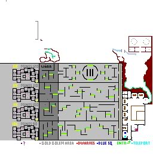

Grimroot... Home of the Dwarves
Under Exploration... Check back often for Updates

The Dwarven town of Grimroot is accessed from the door next to level 80 mines. The door key required is in 4 parts and is obtained in the lvl 80 mines. Grimroot contains the usual shops and a Dwarf Chief (207,235) and Dwarf Shaman (244,187) who have quests for you to do in mines levels 90 through 120, and the Lizard Swamp, both of which are accessed from the town.
Be sure to touch the blue sq in Grimroot before attempting any quests there! as you cannot teleport back if you loose the key on your corpse.
Happy mining :-)
Additional mapping of Level 100 mines sent to me by Basil Daoust... many thanks. Martin
Last Edited Sunday, January 04, 2009 01:04:40 PM